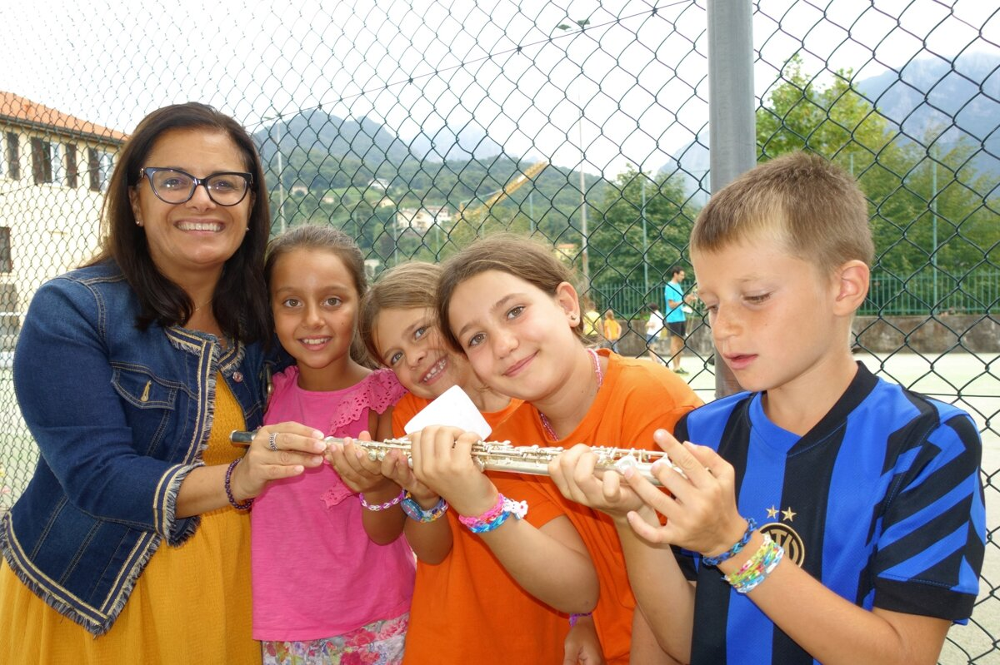

Dopo il successo dello scorso anno, torna il progetto che avvicina i bambini alla musica nel periodo prima dell’inizio della scuola. Scopri il percorso e contatta la scuola allievi per le prossime edizioni.
Il progetto della Filarmonica dedicato ai bambini delle scuole elementari torna con musica, gioco e divertimento.

Dopo il successo dello scorso anno, torna il progetto che avvicina i bambini alla musica nel periodo prima dell’inizio della scuola. Scopri il percorso e contatta la scuola allievi per le prossime edizioni.